開卷有益 ／
國中教育會考 ／ 數學 ／ 115 年115 年國中教育會考數學試題與答案
這一頁是民國 115 年國中教育會考數學的整份歷屆試題，共 27 題，題目與標準答案出自心測中心 會考歷屆試題（依著作權法 §9，考試試題不受著作權保護），其中 27 題附有詳解。以下逐題列出題幹、選項與答案；要計時作答或記錄成績，請用線上練習。
線上作答這一科 →
全部 27 題
第 1 題
解二元一次聯立方程式 \(\begin{cases} x + 2y = 5 \\ 2x - 2y = 1 \end{cases}\)，得 \(x\) 值為何？
（A） \(-4\)（B） \(-2\)（C） \(2\)（D） \(4\)答案：（C）
詳解與考點 正解：兩式的y項為2y與−2y，選相加可消去y。x+2y=5與2x−2y=1相加，得3x=6，再除以3，x=2，故C為正解。代回x+2y=5，得2+2y=5、2y=3、y=1.5，符合另一式。
A：−4把兩式相減或符號處理錯誤；正確相加應得3x=6，錯誤。
B：−2同樣不符合3x=6，錯誤。
D：4把3x=6的除法算錯；6÷3=2，不是4，錯誤。
本題考點：二元一次聯立方程式——係數相反時兩式相加即可消去該未知數；解出後代回原式可驗算。
第 2 題
如圖（一），直角柱 ABCDEF 的底面為正三角形，圖中標示各頂點名稱。判斷此角柱中的 \(\angle ABC\)、\(\angle BCF\) 的度數分別為何？
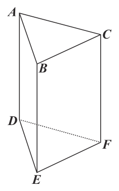
（A） \(\angle ABC = 90^\circ\)，\(\angle BCF = 90^\circ\)（B） \(\angle ABC = 60^\circ\)，\(\angle BCF = 60^\circ\)（C） \(\angle ABC = 90^\circ\)，\(\angle BCF = 60^\circ\)（D） \(\angle ABC = 60^\circ\)，\(\angle BCF = 90^\circ\)答案：（D）
詳解與考點 正解：底面ABC為正三角形，所以∠ABC=60。直角柱的側稜垂直底面，側面BCFE為矩形，因此∠BCF=90。故∠ABC=60、∠BCF=90，D為正解。
A：把正三角形的∠ABC誤判為90，錯誤。
B：把側面矩形的∠BCF誤判為60，錯誤。
C：將正三角形的60與側面矩形的90對調，錯誤。
本題考點：正三角形——三個內角皆為60；直角柱——側面為矩形，矩形內角皆為90，須分別辨認底面角與側面角。
第 3 題
若 \(\sqrt{504}\) 的最簡根式為 \(a\sqrt{b}\)，則 \(a+b\) 之值為何？
（A） 13（B） 19（C） 20（D） 50答案：（C）
詳解與考點 正解：要化成最簡根式，先把 504 分解出完整平方因數。504=2³×3²×7=4×9×14=36×14。√504=√(36×14)=√36×√14=6√14，所以 a=6、b=14，a+b=6+14=20，C 為正解。
A：13 是只取部分因數或未完整提出平方因數所得，錯誤。
B：19 未依 a=6、b=14 相加，錯誤。
D：50 是把根式化簡或加法計算錯誤，錯誤。
本題考點：最簡根式——將被開方數分解為「完全平方數×其餘因數」，完整平方數可提出根號外；檢查判準——根號內的 14 已無大於 1 的完全平方因數。
第 4 題
已知甲袋中有三顆球，球上分別標記 2、3、4；乙袋中有三顆球，球上分別標記 3、4、5。阿翰打算從甲、乙兩袋中各抽出一球，若甲袋中每顆球被抽出的機會相等，乙袋中每顆球被抽出的機會相等，則抽出的兩球上的數字，總和為多少的機率最大？
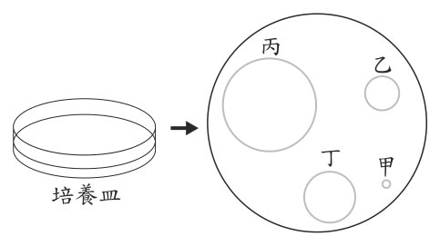
（A） 6（B） 7（C） 8（D） 9答案：（B）
詳解與考點 正解：從兩袋各抽一球共有 3×3=9 種等機會配對，須逐一計數各和出現的次數。和為 7 的配對是 2+5、3+4、4+3，共 3 種，機率=3/9。其餘和的次數依序為 5 有 1 種、6 有 2 種、8 有 2 種、9 有 1 種，因此 7 的機率最大，選 B。
A：和為 6 的配對為 2+4、3+3，共 2 種，機率=2/9。
C：和為 8 的配對為 3+5、4+4，共 2 種，機率=2/9。
D：和為 9 的配對只有 4+5，共 1 種，機率=1/9。
本題考點：等可能事件——先列出總配對數 3×3=9，再比較各目標和的配對數；機率大小——分母相同時，配對數越多，機率越大。
第 5 題
算式 \( 2.45 \times 98.7 - (-0.55) \times 98.7 \) 之值介於下列哪兩個數之間？
（A） \( 150 \)，\( 200 \)（B） \( 200 \)，\( 250 \)（C） \( 250 \)，\( 300 \)（D） \( 300 \)，\( 350 \)答案：（C）
詳解與考點 正解：題幹兩項都有 98.7，應用乘法分配律提出公因數，可直接判斷數值所在區間。原式=2.45×98.7−(−0.55)×98.7。先提出 98.7，得 98.7×[2.45−(−0.55)]。括號內負負得正：2.45+0.55=3。再代入，98.7×3=296.1。因為 250<296.1<300，所以 C 為正解。
A：150 到 200 的區間不含 296.1。若把括號錯算成 2.45−0.55=1.9，會得到 98.7×1.9=187.53，才會落入此區間；錯在漏掉負負得正。
B：200 到 250 的區間也不含 296.1。原式經正確計算為 296.1，不可能落在此區間。
D：300 到 350 的區間下限是 300，而 296.1<300；把 98.7×3 誤算成大於 300 才會選此項。
本題考點：乘法分配律——a×c−b×c=c×(a−b)；減去負數——x−(−y)=x+y；估算區間前先完整算出括號與乘積的中間值。
第 6 題
小彭的農園將收成的文旦根據每顆的重量分為小果、中果、大果，再根據每顆的品質分為良級、優級、特級，分類後各類別的總重量如表（一）所示。因為被分類為良級或大果的文旦不受喜愛，所以小彭僅將其餘的文旦都包裝成禮盒販售，求包裝成禮盒販售的文旦總共有多少公斤？
表（一）（單位：公斤） 良級 優級 特級 合計 小果 50 180 270 500 中果 20 100 80 200 大果 10 40 50 100 合計 80 320 400 800
（A） 620（B） 630（C） 700（D） 720答案：（B）
詳解與考點 正解：題幹要排除「良級或大果」，關鍵是用容斥原理，避免重複扣除表中的交集。表中總重=800 公斤；良級合計=80 公斤，大果合計=100 公斤，而大果且良級=10 公斤。被排除的重量=80+100−10=170 公斤，所以禮盒重量=800−170=630 公斤，B 為正解。
A：620 比正確值少 10，將大果且良級的 10 公斤重複扣除，錯誤。
C：700 只扣除良級 80 公斤或只以不完整的類別計算，未排除「良級或大果」全部重量。
D：720 只扣除良級 80 公斤，漏扣大果中優級 40 公斤與特級 50 公斤，錯誤。
本題考點：表格判讀——引用總計、列合計與交叉格時，數值須分別對應表中的 800、80、100、10；容斥原理——A 或 B 的數量=A+B−交集，交集只能扣一次。
第 7 題
計算多項式 \( 4x^2 - 3x - 5 \) 除以 \( x + 2 \) 後，所得商式與餘式兩者之和為何？
（A） \( 4x + 6 \)（B） \( 4x + 10 \)（C） \( -7x - 5 \)（D） \( -11x - 1 \)答案：（A）
詳解與考點 正解：題幹要的是「商式與餘式的和」，先以 x+2 的零點 −2 作綜合除法。係數為 4、−3、−5：先落下 4；4×(−2)=−8，−3+(−8)=−11；−11×(−2)=22，−5+22=17。商式=4x−11，餘式=17。兩者相加=(4x−11)+17=4x+6，故 A 為正解。
B：4x+10 是把餘式誤算為 21，錯誤。
C：−7x−5 未依綜合除法所得商式 4x−11 與餘式 17 相加，錯誤。
D：−11x−1 把商式的係數與常數位置混淆，錯誤。
本題考點：綜合除法——除式 x+2 對應代入數 −2，依序乘、加求商係數與餘式；題意判讀——最後要求的是商式加餘式，不是僅寫商式或餘式。
第 8 題
有一培養皿上均勻分布細菌，圖 ( 二 ) 是培養皿與其俯視圖，生物學家在培養皿上選定四個圓形區域，區域面積越大所含細菌數越多。若圖中甲、乙、丙三個區域細菌的數量分別為 4.4 × 105 個、 7.3 × 106 個、 5.4 × 107 個，則下列何者可能是丁區域細菌的數量？
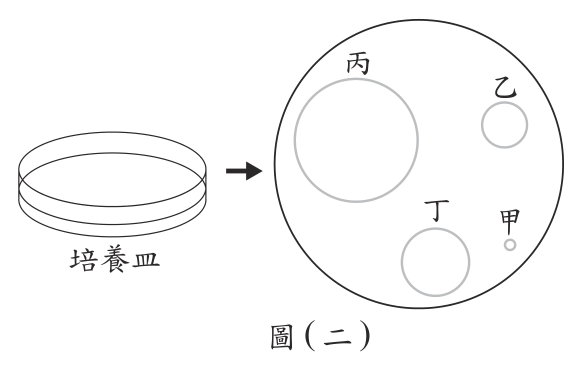
（A） \(1.7\times10^{5}\)個（B） \(1.7\times10^{6}\)個（C） \(1.7\times10^{7}\)個（D） \(1.7\times10^{8}\)個答案：（C）
詳解與考點 正解：題幹說面積越大，細菌數越多；由圖可判定丁的面積小於丙而大於乙，因此丁的數量須介於乙的 7.3×10⁶ 與丙的 5.4×10⁷ 之間。比較 C：1.7×10⁷，大於 7.3×10⁶，因為 10⁷>10⁶；又小於 5.4×10⁷，因為同為 10⁷ 時 1.7<5.4，符合條件，故選 C。
A：1.7×10⁵ 小於甲的 4.4×10⁵，也小於乙，與丁大於乙不符。
B：1.7×10⁶ 小於乙的 7.3×10⁶，與丁大於乙不符。
D：1.7×10⁸ 大於丙的 5.4×10⁷，與丁小於丙不符。
本題考點：科學記號比大小——先比較 10 的次方，次方相同再比較前面的數字；圖表對應——先依圓面積建立丁介於乙、丙之間的數量範圍，再逐項檢驗。
第 9 題
已知一元二次方程式 \( 2x(x+7)-10(x+7)=0 \) 的兩根為 \( a \)、\( b \)，且 \( a>b \)，求 \( a+2b \) 之值為何？
（A） \( -13 \)（B） \( -9 \)（C） \( -4 \)（D） \( -3 \)答案：（B）
詳解與考點 正解：兩項都有（x+7），所以先提公因式解方程式。2x（x+7）−10（x+7）=0。提出（x+7）得（x+7）（2x−10）=0。令 x+7=0，得 x=−7；令 2x−10=0，得 2x=10、x=5。因 a>b，所以 a=5、b=−7。代入 a+2b=5+2×（−7）=5−14=−9，故 B 為正解。
A：若把 2×（−7）錯算成 −18，才會得到 5−18=−13；正確乘積是 −14。
C：若把 2×（−7）錯算成 −9，才會得到 5−9=−4；正確乘積是 −14。
D：若把 2×（−7）錯算成 −8，才會得到 5−8=−3；正確乘積是 −14。
本題考點：一元二次方程式——先提共同因式，利用零乘積性質分別令各因式為 0；根的排序——求得兩根後須依 a>b 指派，再代入目標式。
第 10 題
某書店舉辦優惠活動，購買的書原價合計滿 1100 元折扣 200 元，圖 ( 三 ) 為兄妹兩人的對話情形。根據圖中的對話計算，妹妹要買的書原價為多少元？圖 ( 三 )
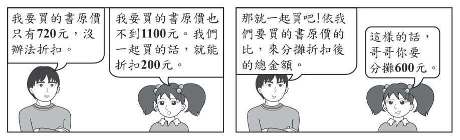
（A） 360（B） 380（C） 460（D） 480答案：（D）
詳解與考點 正解：折扣後總額要按原價比例分攤，哥哥原價720、實付600，妹妹原價設為m。原價合計720+m，折後總額為720+m−200=520+m。依比例列式720÷（720+m）×（520+m）=600。兩邊乘720+m：720（520+m）=600（720+m）。展開374400+720m=432000+600m，120m=57600，m=480，故D為正解。
A：360若將200元折扣平均分攤或錯按人數分攤會得到，未依原價比例，錯誤。
B：380代入比例式，720÷1100×900約589.1，不是600，錯誤。
C：460代入比例式，720÷1180×980約598.0，不是600，錯誤。
本題考點：比例分攤——個人實付＝個人原價÷原價總額×折後總額；列方程後須同乘分母、展開並合併同類項。
第 11 題
\( A(a) \)、\( B(b) \)、\( P(a+b) \) 三點在數線上的位置如圖（四）所示。若要在數線上標示點 \( Q(b-a) \)，則關於 \( Q \) 點的位置，下列敘述何者正確？
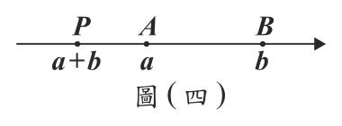
（A） 在 \( B \) 的右邊（B） 介於 \( A \)、\( B \) 之間（C） 介於 \( P \)、\( A \) 之間（D） 在 \( P \) 的左邊答案：（A）
詳解與考點 正解：圖示順序為P（a+b）<A（a）<B（b）。由a+b<a得b<0；又a<b，所以b−a>0。Q的坐標b−a在原點右側，而B的坐標b<0在原點左側，因此Q在B的右邊，故A為正解。
B：Q不是介於A、B之間；A、B的坐標皆小於0，而Q=b−a>0，錯誤。
C：P、A的坐標均在B左側，皆小於0；Q>0不可能介於兩者間，錯誤。
D：在P左邊須有Q<a+b，但Q>0而a+b<a<0，不成立，錯誤。
本題考點：數線大小——左邊坐標較小；不等式相減——a<b可改寫為b−a>0，先判正負再定位。
第 12 題
\( \triangle ABC \) 的邊上有三點 D、E、F，各點位置如圖（五）所示。若 \( \overline{BE} = \overline{AF} \)，\( \angle BED = \angle AFC \)，\( \overline{ED} = \overline{FC} \)，則根據圖中標示的長度，求四邊形 ADEF 周長為何？
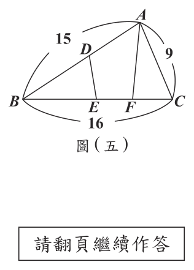
（A） 20（B） 22（C） 24（D） 25答案：（B）
詳解與考點 正解：BE=AF、∠BED=∠AFC、ED=FC，依邊角邊得△BED≅△AFC，所以BD=AC=9。AD=AB−BD=15−9=6。又EF=BC−BE−FC=16−AF−FC。四邊形周長=AD+DE+EF+FA=6+DE+（16−AF−FC）+AF=22+DE−FC=22，因DE=FC，故B為正解。
A：20把AD或周長中的邊漏算，與AD=6及互消後的22不符。
C：24未將DE=FC互相消去，或把AD誤算，錯誤。
D：25同樣未依全等得到BD=AC=9，導致AD=15−9=6算錯，錯誤。
本題考點：三角形全等SAS——兩邊及夾角相等可推出對應邊相等；周長湊項——先以整邊減去已知段，再利用DE=FC消去未知量。
第 13 題
若坐標平面上有一直線 \(L\) 與 \(x\) 軸平行，且 \(L\) 通過點 \((-3,-1)\)，則 \(L\) 的方程式為何？
（A） \(x = -3\)（B） \(y = -3\)（C） \(x = -1\)（D） \(y = -1\)答案：（D）
詳解與考點 正解：與x軸平行的是水平線，所有點的y坐標相同，方程式形如y=k。直線通過（−3，−1），代入y坐標得k=−1，所以方程式為y=−1，故D為正解。
A：x=−3是鉛直線，與y軸平行，不是與x軸平行，錯誤。
B：y=−3把通過點的x坐標−3誤作固定y值，錯誤。
C：x=−1也是鉛直線，且把y坐標誤作x值，錯誤。
本題考點：直線方程式——水平線為y=常數，讀取通過點的y坐標；鉛直線為x=常數，兩者不可混淆。
第 14 題
已知坐標平面上有二次函數 \( y = -(x+5)^2 - 20 \) 的圖形，甲、乙兩人提出以下看法：
【甲】此函數圖形上某個點的 \( y \) 坐標為 \( -15 \)
【乙】此函數圖形上某個點的 \( y \) 坐標為 \( 25 \)
對於甲、乙兩人的看法，下列判斷何者正確？
（A） 甲、乙皆正確（B） 甲、乙皆錯誤（C） 甲正確，乙錯誤（D） 甲錯誤，乙正確答案：（B）
詳解與考點 正解：函數為y=−（x+5）²−20；因（x+5）²≥0，所以−（x+5）²≤0，故y≤−20，最大值為−20。−15>−20，甲所說的y=−15不可能；25>−20，乙所說的y=25也不可能。兩人皆錯誤，故B為正解。
A：甲、乙皆正確與y≤−20矛盾，錯誤。
C：甲說的−15已大於最大值−20，不可能，錯誤。
D：乙說的25更大於最大值−20，不可能，錯誤。它看起來容易誤判，是因為忽略開口向下時頂點的y值是最大值。
本題考點：二次函數頂點式——y=a（x−h）²+k的頂點為（h，k）；a<0開口向下，值域為y≤k。
第 15 題
圖（六）有一正六邊形 ABCDEF 與一正 \(n\) 邊形的部分圖形，其中 G、E、H、I 為正 \(n\) 邊形中連續的四個頂點，F 在 \(\overline{GE}\) 上，C、D、H、I 四點共線。求 \(n\) 值為何？
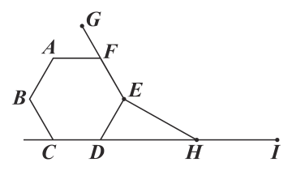
（A） 8（B） 10（C） 12（D） 15答案：（C）
詳解與考點 正解：題幹把正六邊形與正n邊形結合，且C、D、H、I四點共線，應利用正多邊形內角求n。正六邊形每個內角＝(6−2)×180÷6＝120。由F在GE上及C、D、H、I共線的補角關係，可得正n邊形在E的內角為150。代入正n邊形內角公式：(n−2)×180÷n＝150；180n−360＝150n；30n＝360；n＝12，故C為正解。
A：n＝8時，內角＝(8−2)×180÷8＝135，不是150，錯誤。
B：n＝10時，內角＝(10−2)×180÷10＝144，不是150，錯誤。
D：n＝15時，內角＝(15−2)×180÷15＝156，不是150，錯誤。
本題考點：正多邊形內角——內角＝(n−2)×180÷n；圖形共線——先由正六邊形的120與共線形成的補角關係求出正n邊形內角，再代入公式反求n。
第 16 題
如圖（七），\(\triangle ABC\) 中，\(\angle ABC = 90^\circ\)，\(D\) 點為 \(\overline{AC}\) 的中點，\(E\) 點在 \(\overline{BD}\) 上，\(\overline{AE}\) 為 \(\angle BAC\) 的角平分線。若 \(\angle C = 40^\circ\)，則 \(\angle AEB\) 的度數為何？
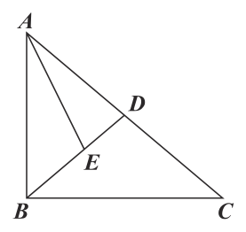
（A） 105（B） 110（C） 115（D） 120答案：（A）
詳解與考點 正解：先由△ABC內角和求∠BAC=180−90−40=50。AE平分∠BAC，故∠BAE=50÷2=25。D為斜邊AC中點，所以DA=DB=DC。DC=DB使△DBC為等腰三角形，∠DBC=∠BCD=40；又∠ABC=90，所以∠ABE=∠ABD=90−40=50。△ABE中，∠AEB=180−25−50=105，故A為正解。
B：110表示將△ABE的其餘兩角和誤算為70；正確為25+50=75，錯誤。
C：115表示將∠ABE或角平分後的∠BAE算錯，錯誤。
D：120把∠ABE誤作35或漏用斜邊中點形成的等腰三角形，錯誤。
本題考點：三角形內角和——三角形三內角和為180；直角三角形斜邊中點——到三頂點等距；角平分線——將頂角平分，再代入△ABE求角。
第 17 題
某國政府公布 2023 年的全國用電量為 2700 億度，並預估 2024 ～ 2030 年的全國用電量逐年增加，且每年增加的用電量為其前一年的 2.5%。根據預估，該國 2030 年的全國用電量為多少億度？
（A） \( 2700 \times (1.025)^{7} \)（B） \( 2700 \times (1.025)^{8} \)（C） \( 2700 + 7 \times 2700 \times 0.025 \)（D） \( 2700 + 8 \times 2700 \times 0.025 \)答案：（A）
詳解與考點 正解：題幹說每年增加前一年的2.5%，所以每年乘1+0.025=1.025。2023到2030依序經過2024、2025、2026、2027、2028、2029、2030，共7次增加。2030年用電量=2700×1.025×1.025×1.025×1.025×1.025×1.025×1.025=2700×（1.025）^7，故A為正解。
B：8次方把2023年也多算一次成長；2023到2030只有7個年度間隔，錯誤。
C：2700+7×2700×0.025假定每年固定增加67.5，屬等差增加，沒有以逐年新數量為基數，錯誤。
D：除等差增加的錯誤外，又多算1年，錯誤。
本題考點：等比成長——每期增加r%即每期乘1+r%；指數次數＝從基準年到目標年的年度間隔數，不是年份個數。
第 18 題
如圖 ( 八 )，圓 O 與菱形 ABCD 中， A、 B、 D 在圓上， C 在圓內，O 在 AC 上。若圓 O 的半徑為 13， BD = 24，則 CO 的長度為多少？
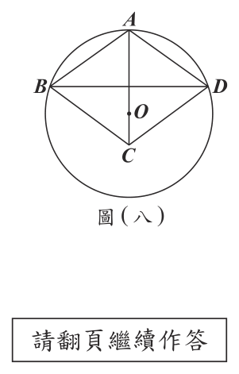
（A） 2（B） 3（C） 4（D） 5答案：（B）
詳解與考點 正解：菱形對角線AC、BD互相垂直平分，設交點為M。BM=BD÷2=24÷2=12。OB=13為圓半徑，直角△OMB中OM=√（13²−12²）=√（169−144）=√25=5。AO=13，且A、M在O同側，AM=AO−OM=13−5=8。MC=MA=8，故AC=AM+MC=8+8=16，CO=AC−AO=16−13=3，故B為正解。
A：2不符合CO=16−13=3，錯誤。
C：4把AM、OM或CO的線段關係算錯；OM=5不是CO，錯誤。
D：5直接把OM誤當CO；OM=5而CO=3，錯誤。
本題考點：菱形對角線——互相垂直且互相平分；直角三角形——斜邊平方等於兩股平方和；線段加減須依O、M、A、C的位置判定。
第 19 題
已知一圓上有 A、B、C、D 四點，其位置如圖 ( 九 ) 所示，其中 AB = 87°， BC = 91°， CD = 88°， AD = 94°。若在此圓上找兩點 E、 F，使得四邊形 ABEF 為長方形，則下列關於 E 點、F 點位置的敘述，何者正確？
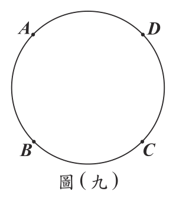
（A） E在BC上，F在CD上（B） E在BC上，F在AD上（C） E在CD上，F在CD上（D） E在CD上，F在AD上答案：（D）
詳解與考點 正解：圓內接長方形的兩條對角線都是直徑，所以 AE、BF 對應的半圓弧各為 180°。先檢查弧和：87°+91°+88°+94°=360°。E 是 A 的對徑點，從 A 經 B 到 E 需 180°；弧 AB=87°，還差 180°−87°=93°。弧 BC=91°，93°>91°，故越過 C 後 E 落在弧 CD 上。F 是 B 的對徑點，從 B 經 A 到 F 需 180°；弧 BA=87°，再加弧 AD=94°，87°+94°=181°>180°，故 F 落在弧 AD 上。D 為正解。
A：E 到達半圓位置前已走過完整弧 BC=91°，再多走 2° 才到 E，所以 E 不在 BC 上；F 也不在 CD 上。
B：E 不在 BC 上，錯誤；F 在 AD 上雖正確，整個選項仍錯。
C：E 在 CD 上正確，但 F 由 B 到 A 再經 AD 的累積弧為 181°，故 F 在 AD 上而不在 CD 上。
本題考點：圓內接長方形——對角線是直徑，對徑兩點所對的弧為 180°；圓周弧長定位——沿指定方向累加弧度，首次超過或達到 180°的弧段即包含對徑點。
第 20 題
已知正整數 \(M\) 的因數中，除了 \(M\) 之外最大的因數是 \(2^2 \times 11\)，正整數 \(N\) 的因數中，除了 \(N\) 之外最大的因數是 \(3 \times 13\)。甲、乙兩人提出以下看法：
【甲】8 一定是 \(M\) 的因數
【乙】9 一定是 \(N\) 的因數
對於甲、乙兩人的看法，下列判斷何者正確？
（A） 甲、乙皆正確（B） 甲、乙皆錯誤（C） 甲正確，乙錯誤（D） 甲錯誤，乙正確答案：（C）
詳解與考點 正解：最大真因數d可寫成原數除以最小質因數。M的最大真因數為2²×11=44，其最小質因數只能是2，故M=44×2=88=2³×11，8=2³一定是M的因數，甲正確。N的最大真因數為3×13=39，最小質因數可為2或3；取2時N=39×2=78=2×3×13，39確為最大真因數，但9不是78的因數，故乙錯誤。甲正確、乙錯誤，C為正解。
A：乙不一定正確；N=78是反例，9∤78，錯誤。
B：甲一定正確，M=88含2³=8，錯誤。
D：乙不一定正確，N可取78，錯誤。
本題考點：最大真因數——原數＝最大真因數×最小質因數；判斷「一定」可由質因數結構證明，判斷「不一定」只需找一個符合條件的反例。
第 21 題
如圖（十），\(\triangle ABC\) 與 \(\triangle ADE\) 中，\(D\) 點在 \(\triangle ABC\) 外，\(E\) 點在 \(\overline{AB}\) 上，\(\angle D = \angle DEA = \angle EAC = \angle C = 65^\circ\)。若 \(\overline{BC}\) 上有一點 \(F\)，\(\overline{AF}\) 與直線 \(DE\) 相交於 \(P\) 點，且 \(\overline{BF} = 5\)，\(\overline{FC} = 8\)，\(\overline{BE} = 6\)，則 \(\overline{AP}\) 與 \(\overline{AF}\) 的長度比為何？
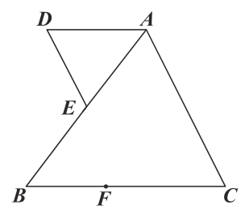
（A） \(4:5\)（B） \(5:6\)（C） \(6:7\)（D） \(7:8\)答案：（D）
詳解與考點 正解：先由等角得等腰，再用平行截線構造相似三角形。因 BF=5、FC=8，所以 BC=5+8=13。在 △ABC 中，∠EAC=∠C 即 ∠BAC=∠BCA，等角對等邊，故 AB=BC=13；再算 AE=AB−BE=13−6=7。又 ∠DEA=∠EAC，內錯角相等，所以 DE∥AC。設直線 DE 與 BC 相交於 Q 點：因 EQ∥AC，△BEQ∼△BAC，得 BQ:BC=BE:BA=6:13，故 BQ=6，FQ=BQ−BF=6−5=1。P、Q 皆在直線 DE 上，故 PQ∥AC，△FPQ∼△FAC，得 FP:FA=FQ:FC=1:8，所以 AP:AF=(8−1):8=7:8，故 D 為正解。
A：4:5 並非由相似比 FQ:FC=1:8 推得，比例來源錯置，錯誤。
B：5:6 把 BF=5、BE=6 直接湊成所求比，忽略先由等腰求 AB=BC=13 再建立相似的步驟，錯誤。
C：6:7 把 BE=6 當作 AE，漏算 AE=13−6=7，也未經截線相似求比，錯誤。
本題考點：等腰三角形——等角對等邊，由 ∠EAC=∠C 求 AB=BC=13；平行線與相似形——由內錯角相等判定 DE∥AC，取 DE 與 BC 的交點 Q，先以 △BEQ∼△BAC 得 BQ=6，再以 △FPQ∼△FAC 得 FP:FA=1:8，故 AP:AF=7:8。
第 22 題
如圖 ( 十一 )，平行四邊形 ABCD 中，AB = 20， AD = 21。甲、乙兩人想找一點 P，使得 P 到 BC 的距離等於 P 到 AD 的距離，且 P 到 AB 的距離等於 P 到 CD 的距離，其作法如下：【甲】連接 AC、BD，兩線段相交於 P 點，則 P 即為所求【乙】作 ∠C、∠D 的角平分線，兩直線相交於 P 點，則 P 即為所求對於甲、乙兩人的作法，下列判斷何者正確？圖 ( 十一 )
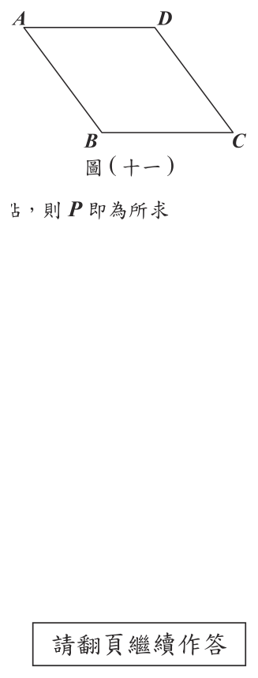
（A） 甲、乙皆正確（B） 甲、乙皆錯誤（C） 甲正確，乙錯誤（D） 甲錯誤，乙正確答案：（C）
詳解與考點 正解：題幹要求同時到兩組對邊等距，關鍵是判斷平行四邊形中心是否同時位於兩組平行線的中間。甲作兩對角線 AC、BD；平行四邊形的對角線互相平分，交點 P 是中心，到 BC、AD 等距，且到 AB、CD 也等距，所以甲正確。乙所作的 ∠C、∠D 角平分線交點雖可滿足到 BC、AD 等距，卻不必滿足到 AB、CD 等距；本題 AB=20、AD=21，並非菱形，故乙錯誤，選 C。
A：誤把相鄰兩角的角平分線交點當成平行四邊形中心；它看起來對，是因為兩者都涉及「等距」，但等距的對邊組不同。
B：忽略平行四邊形對角線互相平分，甲的作法正確。
D：把角平分線的等距性誤延伸到另一組對邊，乙無法保證第二個條件。
本題考點：平行四邊形中心——對角線交點是兩組對邊的中線，故到各組對邊等距；角平分線——角平分線上的點只保證到該角兩邊等距，不可自行推成到另一組平行邊等距。
第 23 題
根據選文，時速錶符合法規的汽車行駛時，若指示速率為 120 公里 / 小時，則實際速率的最小值與最大值分別是多少公里 / 小時？ ( 最小值用無條件進入法取概數到個位，最大值用無條件捨去法取概數到個位 )
（A） 最小值105，最大值120（B） 最小值106，最大值120（C） 最小值120，最大值136（D） 最小值120，最大值137汽車上會安裝答案：（B）
詳解與考點 正解：題幹給定指示速率120，且法規要求指示速率不低於實際速率、兩者差不超過實際速率÷10＋4，所以以不等式求實際速率範圍。設實際速率為V，先列0≤120−V≤V÷10＋4。由0≤120−V，得V≤120，故最大值為120；120無條件捨去到個位仍為120。再由120−V≤V÷10＋4，兩邊同減4得116−V≤V÷10；兩邊同加V得116≤1.1V；兩邊除以1.1得V≥105.4545（循環）。最小值須無條件進入到個位，因此為106，故B為正解。
A：把105.4545（循環）無條件捨去成105；題幹指定最小值要無條件進入，故錯誤。
C：把實際速率下限誤設為120，忽略實際速率可以小於指示速率，錯誤。
D：算出137等於把實際速率放在指示速率之上，違反指示速率不低於實際速率的條件，錯誤。
本題考點：法規不等式——先把文字條件寫成0≤指示速率−實際速率≤實際速率÷10＋4，再解出上下界；取概數——最小值依無條件進入取整，最大值依無條件捨去取整。
第 24 題
根據選文，已知有一輛行駛中的汽車，其輪胎轉速為 \(x\) 圈／分鐘且輪胎周長為 200 公分。若此車的實際速率為 \(y\) 公里／小時，則 \(y\) 與 \(x\) 的關係為下列何者？
（A） \(y = 0.002x\)（B） \(y = 0.12x\)（C） \(y = 200x\)（D） \(y = 12000x\)答案：（B）
詳解與考點 正解：題幹給輪胎周長與每分鐘轉速，須先算每分鐘路程，再把公分／分鐘換成公里／小時。每分鐘路程=200×x=200x 公分。換成公尺：200x÷100=2x 公尺。每小時有 60 分鐘，所以每小時路程=2x×60=120x 公尺。換成公里：120x÷1000=0.12x 公里，因此 y=0.12x，B 為正解。
A：0.002x 只將 200 公分換成公里，漏乘每小時的 60 分鐘，錯誤。
C：200x 未將公分換成公里，也未將分鐘換成小時，錯誤。
D：12000x 將每小時的 12000x 公分誤當成公里，少除以 100000，錯誤。
本題考點：速率換算——先用「周長×轉速」得到每分鐘路程，再乘 60 換成每小時，最後依 100000 公分=1 公里換單位；正比關係——周長固定時，實際速率與轉速 x 成正比。
第 25 題
根據選文，已知原本甲、乙兩輛車上儀器測出的輪胎轉速跟實際的輪胎轉速相等，兩車儀器設定的輪胎周長也與當時兩車安裝的輪胎周長相等。後來甲的儀器發生故障，導致儀器測出的輪胎轉速比實際的輪胎轉速更高，而乙更換輪胎，新輪胎周長比原本的更小，但儀器設定的仍是原本輪胎周長。若甲、乙此時皆以 60 公里 / 小時的指示速率行駛，且甲、乙的實際速率分別為 \(p\) 公里 / 小時、\(q\) 公里 / 小時，則下列關係何者正確？
（A） \(p > 60\)，\(q > 60\)（B） \(p > 60\)，\(q < 60\)（C） \(p < 60\)，\(q > 60\)（D） \(p < 60\)，\(q < 60\)答案：（D）
詳解與考點 正解：題眼是「指示速率固定 60」而儀器在兩種情況都高估，須反推實際速率較低。甲的儀器測得轉速大於實際轉速，設定周長不變，所以同一實際速率會被顯示得較高；要顯示 60，實際速率 p 必小於 60。乙的新輪胎周長較小，儀器卻仍用原本較大的周長：指示速率／實際速率=原周長／新周長>1，指示同樣被高估，所以 q<60。故 p<60、q<60，選 D。
A：把兩種高估都誤判成實際速率較高，錯誤。
B：甲的轉速被高估時，固定指示值所對應的 p 應較低，不是 p>60。
C：乙用較大的設定周長換算較小的新輪胎，指示被高估，q 不會大於 60。
本題考點：儀器換算——指示速率=設定周長×儀器測得轉速；高估判準——指示值高於實際值時，在固定指示速率下實際速率必較低。
第 26 題
阿川想要挑戰一場馬拉松賽事，並在賽前訓練自己的體能。他決定利用每圈 400 公尺的跑道訓練，並訂定了訓練計畫如下：每週星期一、四訓練，第一週的星期一跑 5 圈，每週星期四的訓練圈數比當週星期一多 2 圈，之後每週星期一的訓練圈數與前一週的星期四相同，直到某日的訓練距離超過 15 公里，就維持該圈數不再增加。請根據上述資訊回答下列問題，完整寫出你的解題過程並詳細解釋：
(1) 依照訓練計畫，阿川第 2 週的星期四的訓練圈數為幾圈？
(2) 承 (1)，最早從第幾週的星期幾開始，當日的訓練距離會超過 15 公里？
標準答案未收錄
詳解與考點 考點：等差數列的規律建立與不等式判斷。
先把訓練圈數的規律寫清楚。跑道每圈 400 公尺，超過 15 公里就是超過 15000 公尺，等於超過 37.5 圈（即圈數要 38 圈以上、亦即大於 37.5 圈）。
依規則列出各週圈數（星期一＝前一週星期四；星期四＝當週星期一＋2）：
第 1 週：一 5 圈、四 7 圈
第 2 週：一 7 圈、四 9 圈
第 3 週：一 9 圈、四 11 圈
(1) 第 2 週星期四的圈數＝第 2 週星期一（7 圈）＋2＝9 圈。
答：(1) 9 圈。
(2) 觀察規律，第 n 週星期一為（2n＋3）圈、星期四為（2n＋5）圈，每跨一次（一→四、四→下週一）就多 2 圈，呈等差遞增。要使單日距離超過 15 公里，需圈數大於 37.5，即至少 38 圈。
逐一檢查：第 16 週星期四＝2×16＋5＝37 圈＝14800 公尺（未超過）；第 17 週星期一＝37 圈（與上週四相同，仍 14800 公尺，未超過）；第 17 週星期四＝2×17＋5＝39 圈＝39×400＝15600 公尺，首次超過 15000 公尺（15 公里）。
答：(2) 最早從第 17 週的星期四開始，當日訓練距離會超過 15 公里。
第 27 題
2. 某場館有一組由三個相同的五邊形沙發緊密拼成的Y 字型沙發椅，如圖( 十三) 所示，其俯視圖如圖( 十四) 所示，其中 AB 為 90 公分，BC、 AE 皆為 130 公分， CD = DE，∠A = ∠B = 90°，且 D 為Y 字型沙發椅的中心點。圖( 十三) 圖( 十四) 請根據上述資訊回答下列問題，完整寫出你的解題過程並詳細解釋。 (1) 求圖( 十四) 中 ∠CDE 的度數為何？ (2) 今想訂製一塊正六邊形的地毯，並將Y 字型沙發椅放置在上面，其中正六邊形地毯的對角線交點與 D 點重合，擺放時 AB 與地毯的一邊平行且至少相距 50 公分，如圖( 十五) 所示，則地
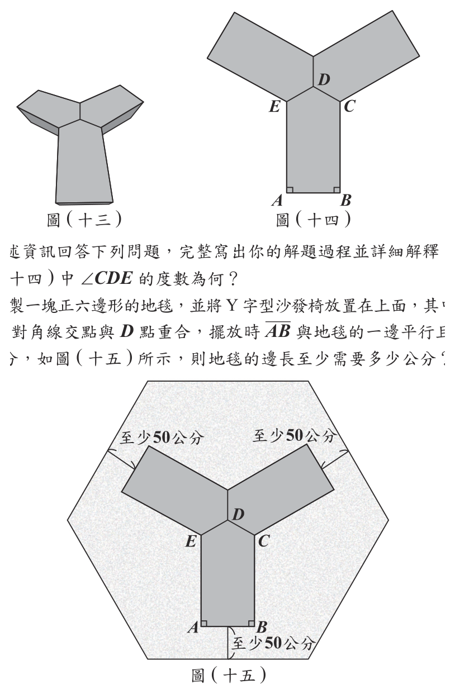
本題選項為上圖中的 A／B／C／D，請對照圖片作答。
標準答案未收錄
詳解與考點 考點：多邊形內角和、等腰三角形、正六邊形邊心距（apothem）與點到直線距離。
(1) 由圖（十四），三個全等五邊形繞中心點 D 緊密拼成，三個 ∠CDE 恰好填滿 D 周圍一整圈，故 3×∠CDE＝360°，得 ∠CDE＝120°。
（驗證：五邊形 ABCDE 內角和＝540°，因 BC＝AE、CD＝DE 左右對稱，故 ∠C＝∠E。由 90°＋90°＋∠C＋120°＋∠E＝540°，得 ∠C＝∠E＝120°，合理。）
答：∠CDE＝120°。
(2) 先求三角形 CDE。連 CE，因 ∠A＝∠B＝90° 且 AB＝90，可知 CE＝AB＝90。△CDE 中 ∠CDE＝120°、CD＝DE，故為頂角 120° 的等腰三角形，兩底角各 30°。D 到 CE 的距離（高）＝（CE/2）×tan30°＝45×(1/√3)＝15√3。
再算 D 到 AB 的距離。AB 與 CE 平行，且 B 到 C 距離 BC＝130（垂直），故 AB 到 CE 距離＝130。所以 D 到 AB 的距離＝130＋15√3。
地毯為正六邊形，對角線交點（中心）與 D 重合，且與 AB 平行的那一邊須與 AB 至少相距 50 公分，故該邊到中心 D 的距離（即邊心距）至少為：
邊心距＝(130＋15√3)＋50＝180＋15√3。
正六邊形邊心距與邊長關係為 邊心距＝(√3/2)×邊長，故
邊長＝(2/√3)×(180＋15√3)＝360/√3＋30＝120√3＋30。
答：地毯邊長至少需 (120√3＋30) 公分（約 237.85 公分）。
其他年度
回到國中教育會考數學的年度總覽 ，
或到國中教育會考題庫首頁 看其他科目。
題目與標準答案出自心測中心 會考歷屆試題（依著作權法 §9，考試試題不受著作權保護）。依中華民國《著作權法》第 9 條第 1 項第 5 款，
依法令舉行之各類考試試題不得為著作權之標的，得自由利用。詳解為 AI 整理的學習輔助，
並非官方標準答案 ；中華民國會修訂，引用前請對照現行版本查證。